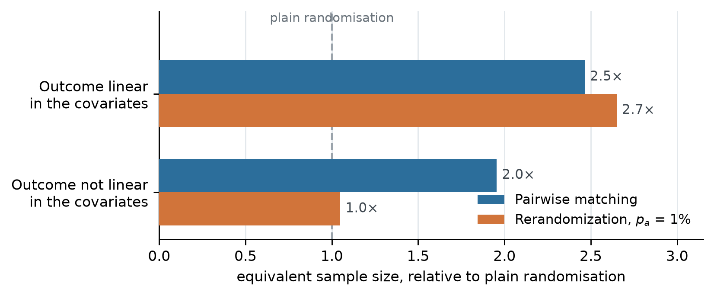
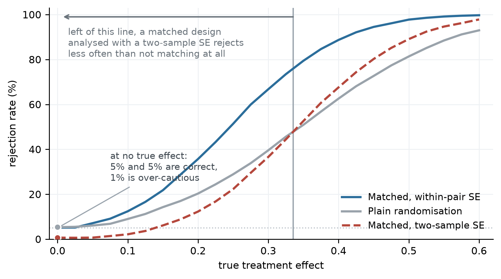

drag to add pairs
Pairwise matching
matching
design
inference
Pairing units before you randomise: when it beats rerandomization, why the pairing has to be solved properly, and how to analyse the result.
With a few hundred units, you want a control group and a treatment group that are as similar to each other as possible before the intervention begins. Rerandomization reaches that by discarding splits that come out badly balanced. Pairwise matching reaches it by construction. Matching pairs units with similar characteristics, and within each pair a coin flip decides which unit receives treatment and which serves as its control. So the two groups are balanced pair by pair, not just on average.
This article asks whether matching beats rerandomization, why pairing needs solving properly, and how to analyse the experiment afterwards.
What it does
Closeness between two units is measured with the Mahalanobis distance. With (even) \(N\) units and \(k\) covariates:
- Compute the covariate covariance matrix \(S\) once, from all \(N\) units.
- For every pair of units \(i\) and \(j\), compute the squared distance between them: \[ D^2(i,j) \;=\; (x_i - x_j)^{\!\top} S^{-1} (x_i - x_j). \]
- Choose the \(N/2\) pairs that minimise the total within-pair distance, subject to covering every unit exactly once.
- Inside each pair, flip a coin to decide which unit goes to treatment.
We will cover the case where \(N\) is odd later in this article.
Step 2 is the same quadratic form as in the Mahalanobis article, applied to the gap between two units instead of the gap between a unit and the mean.
Step 4 is what keeps this a randomised experiment. Assigning deterministically inside pairs, say the higher-spending unit always to control, would leave a single possible split and no basis for a \(p\)-value, where the coin flips leave \(2^{N/2}\), about \(1.6 \times 10^{60}\) at \(N = 400\).
The pairing is an optimisation problem, not a sorting problem
The obvious way to form pairs is the “greedy” approach: pair the two closest units anywhere in the sample, then repeat on what is left. It is easy to explain and implement, but it does not produce the minimum.
Drag the slider to watch it choose. The middle plot shows what each pair costs, on a log scale because the range is wide, and the bottom panel the running total. Each plots the optimal matching alongside, both ranked closest pair first. The early pairs are nearly free, and the final one costs 21.0 against 6.6 for the other nineteen put together.
Greedy matching is closer than the optimal matching on 12 of the 20 ranks, because taking the nearest available pair at every step collects near-duplicates that the optimal matching gives up. Those wins come to 0.8 in total, against 20.5 at the ranks where it loses.
Greedy pairing strands the units it leaves until last. The gap for those last pairs goes into the variance of the treatment effect estimate, so the tail of the distance distribution matters more than its total.
NoteWhat the lengths mean here, and what they would mean on real data
Here the sample is rescaled so that \(S\) is the identity. The Mahalanobis distance is then the plain straight-line distance, so each line’s length is exactly what is being minimised.
Rescaling changes the picture, not the distances: \(D^2\) is unchanged by linear transformations of the covariates.
Real covariates are usually correlated. Then equal distances form tilted ellipses rather than circles, so screen length no longer tracks distance. A gap along the long axis is cheap because such differences are common, while the same gap across the short axis is expensive because that combination is rare.
The cost of the greedy algorithm over the optimal algorithm depends on the sample. With 40 units, the greedy algorithm reaches 3.5 times the optimal total distance and the cost of the worst pair is 11 times greater. At a few hundred units the totals would be closer together, while the cost of the worst pair would be several times further apart.
| Sample | Total D2, optimal | Total D2, greedy | Worst pair, optimal | Worst pair, greedy |
|---|---|---|---|---|
| N = 100, k = 4 | 63.0 | 82.1 (+30%) | 5.47 | 10.41 (1.9×) |
| N = 200, k = 4 | 78.5 | 113.2 (+44%) | 4.70 | 14.80 (3.1×) |
| N = 200, k = 8 | 409.1 | 505.0 (+23%) | 10.20 | 54.08 (5.3×) |
Edmonds’ blossom algorithm solves the problem exactly in \(O(N^3)\). Because any unit may pair with any other, the graph is not bipartite and the Hungarian algorithm does not apply; Greevy et al. (2004) introduced this non-bipartite form for the design. In Python it is available in networkx and in R through the nbpMatching package. The button in the bottom right shows the optimal matching for comparison.
Does it gain more than rerandomization?
Both designs are aiming at the same thing, so the comparison is worth making directly. The covariates are held fixed throughout: 400 units with four of them. Two outcomes are built on those covariates, carrying the same total signal and differing only in how much of it a linear function can reach. Each design is then run 4,000 times against each outcome. Matching solves the pairing once and then flips a fresh coin inside every pair, so its 4,000 assignments are all different. The gain is expressed as the sample you would need under plain randomisation to estimate the treatment effect just as precisely.

The two designs behave the same way on a linear outcome and come apart completely on a non-linear one. The reason is that they are limited by different quantities. A threshold on \(M\) constrains the difference in covariate means, which pins down the linear part of the response and leaves the rest untouched, so rerandomization is limited by how much of the outcome is linear in the covariates. That falls from 0.64 to 0.06 between the two rows, and the bar collapses with it.
Matching is limited by the other quantity. The two units in a pair sit close together in covariate space, so any function of the covariates takes nearly the same value on each side of the coin flip, whether that function is linear or not. Both outcome models leave the same share of variance unexplained once any function is allowed, which is why matching holds up across both rows.
NoteChecking both numbers against theory
The variance ratio under rerandomization is \(1 - (1 - v_a)R^2\), with \(v_a\) the shrinkage factor from the rerandomization article and \(R^2\) the linear one. At \(k =\) 4 and \(p_a = 1\%\), \(v_a =\) 0.049, so the formula predicts a variance ratio of 0.39 for the linear model against 0.38 measured, and 0.94 for the non-linear model against 0.95 measured. Splitting the outcome into its linear fit and the residual shows the mechanism directly: under rerandomization the variance of the fitted part shrinks by a factor of about \(v_a\), and the variance of the residual part does not move.
For matching, a perfectly matched sample would reduce the variance to \(1 - R^2 =\) 0.36 here against 0.51 achieved. The shortfall is the price of pairs that are close but not identical.
The two designs also differ in what you can do about a disappointing number. Tightening the threshold drives \(v_a\) towards zero, so rerandomization has a dial. Matching has none, because the within-pair distances are a property of the sample: once the matching is optimal there is nothing further to spend. What limits it is covariate density, which is why matching improves as \(N\) grows and degrades as \(k\) grows.
TipWhich to reach for
Matching is the safer default when you cannot describe the outcome as roughly linear in the covariates, and when the sample is small enough that a few awkward units could land on one side. Rerandomization is the better fit when the covariates enter the response roughly linearly, when you want a dial you can tighten, and when the pairing cannot survive to the analysis stage.
Odd numbers, and units with nothing close to them
One mechanism solves two awkward cases. A perfect matching needs an even \(N\), so an odd sample leaves a unit over. Separately, a sample may contain units that sit far from everything else, and forcing them into pairs produces exactly the stranded pairs the previous section warned about.
Both are solved by adding sinks. A sink is a phantom unit placed at distance zero from every real unit, with no edge to another sink. Because a sink has to be matched and cannot take another sink, it takes a real unit out of the experiment. Pairing with a sink is free, so the solver spends its sinks on whichever units were most expensive to pair.
One sink absorbs the odd unit in an odd sample. Beyond that, sinks come in pairs: each one removes a real unit, so you need an even number of them to leave an even number of units behind. Adding two sinks excludes the two units whose matches would have been worst, four excludes the worst four, and so on.
Drag below to add sinks to a sample containing four units placed well away from the rest.
02468
The first two sinks remove the two worst-placed units and the worst remaining pair falls by 64%. Two more remove the rest of the awkward group. After that the returns shrink, and every further sink costs real sample size.
A caliper sets a maximum acceptable within-pair distance. Implementing one by raising the weight of long edges can leave a problem with no feasible solution, so the usual route is a caliper enforced through sinks: make a sink cheaper than any pairing beyond the cap, and units with no acceptable partner drop out by themselves. Every unit you exclude narrows what the experiment covers, so record how many and which ones.
Analysing a matched experiment
The point estimate needs no special treatment. Averaging the within-pair differences and taking the plain difference in group means are the same arithmetic, because every pair puts one unit in each arm. There is no way to forget the matching when forming the estimate.
A two-sample \(t\)-test computes the standard error from the within-arm variances. Under this design each arm contains one unit from every pair, so each arm spans the full covariate range and its variance is close to the variance of the whole sample. That calculation returns roughly the value it would have returned under plain randomisation, while the estimate itself now moves around far less. The interval comes out 40% too wide, and covers the true effect 99.3% of the time instead of 95%.
Differencing within pairs fixes it. The within-pair difference is the unit of analysis, and its spread already reflects how closely the pairs were matched, so the interval lands at 94.9% coverage. A regression of the outcome on treatment plus a fixed effect for each pair is the same calculation and gives the same standard error. The cost is degrees of freedom, \(N/2 - 1\) rather than \(N - 2\), which is minor at a few hundred units.
The upper bound on what this is worth is set by the covariates. For a perfectly matched sample the variance of the estimate falls to the share of outcome variance the covariates do not explain, so the naive variance is too large by at most \(1/(1 - R^2)\) and the naive standard error by at most \(1/\sqrt{1 - R^2}\). Here \(R^2\) is 0.64, giving a ceiling of 1.68 on the standard error against the 1.40 realised, so the matching captured 76% of what a perfect matching would have removed.
A conservative interval is not always a safe one
Conservative is accurate but incomplete: lost precision is not the only consequence.

Read the dashed red line against the grey one. The matched design analysed with a two-sample standard error rejects less often than plain randomisation does. At a true effect of zero that is what you want, because the rejection rate there is the false positive rate. Above zero it is lost power, until the ordering reverses once the effect is large enough. A test statistic that is both smaller in spread and centred below the critical value crosses that value less often, so the tighter estimate works against you until the effect clears the bar on its own. Bruhn and McKenzie report the same effect: failing to account for the randomisation method gives tests of the wrong size, and can give less power than a plain random draw would have.
The blue line is what the design was for.
WarningThe pairing has to survive to the analysis
Matching moves its gain into the analysis stage, where it needs the pair labels to claim it. If the data reaches you aggregated, say a count and a sum per arm per day, the pair structure is gone and the only standard error you can compute is the conservative one. Store the pair identifier alongside the assignment at the point you randomise, and carry it through every table that follows.
Rerandomization does not share this exposure, because a strict threshold banks most of its gain at the design stage. If you know the analysis will run on aggregates, that is a point in favour of a threshold over pairs.
TipWhat to do
Pair on the covariates you have reason to believe predict the outcome, solve the matching exactly, keep the pair identifier, and analyse within pairs. Matching on covariates that do not predict the outcome spends degrees of freedom and returns nothing.
References
- Bruhn, M. and McKenzie, D. (2009). In pursuit of balance: randomization in practice in development field experiments. American Economic Journal: Applied Economics, 1(4), 200–232.
- Edmonds, J. (1965). Paths, trees, and flowers. Canadian Journal of Mathematics, 17, 449–467.
- Greevy, R., Lu, B., Silber, J. H. and Rosenbaum, P. (2004). Optimal multivariate matching before randomization. Biostatistics, 5(2), 263–275.
- Lu, B., Greevy, R., Xu, X. and Beck, C. (2011). Optimal nonbipartite matching and its statistical applications. The American Statistician, 65(1), 21–30.
- Morgan, K. L. and Rubin, D. B. (2012). Rerandomization to improve covariate balance in experiments. The Annals of Statistics, 40(2), 1263–1282.